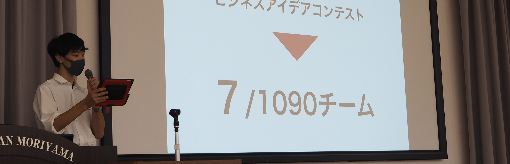

略歴(Histories)
2019年3月
2019年4月
2019年5月
2019年9月
2020年2月
- SAP成果発表会で発表
- キャリア甲子園2019準決勝 ファイナリストに選出される
- 関西SDGsユースアイデアコンテストファイナリストに選出
2020年3月
- キャリア甲子園2019中止
- 関西SDGsユースアイデアコンテスト延期
- ワンチャレ参加 特別賞
2020年4月
- 新型コロナウイルスの感染拡大により高校が休校になる
2020年5月
- Sustainable Week LIVE出演
- ビヨンド・コロナ・コンテスト開催
- studioこほく出演
- alternaに掲載
- 中日新聞に掲載
- 産経新聞に掲載
- 立命館新聞社に掲載
- Qulii Paperにて記事を執筆
2020年6月
- ビヨンド・コロナ・コンテスト終了
- MBSテレビ出演(ミント)
2020年7月
- 速水瑠奈氏とP.Sを結成
- NHKテレビ出演(おうみ発630)
- 我悟万博登壇
- NHKテレビ出演(ひるまえほっと)
2020年8月
- 学校説明会登壇
- SSAP参加
- 我悟万博登壇
- 大阪大学SEEDSプログラム選考通過
- 関西SDGs ユースアイデアコンテストでオーディエンス賞を獲獲得
2020年9月
- 学校説明会登壇
- 総長ピッチチャレンジオーディション通過
2020年10月
- 学校説明会登壇
- 総長ピッチチャレンジブラッシュアップ参加
2020年11月
- 文化祭でプロジェクト長を務める
- STEAM JAPAN AWARD 2020にてシルバー賞を受賞